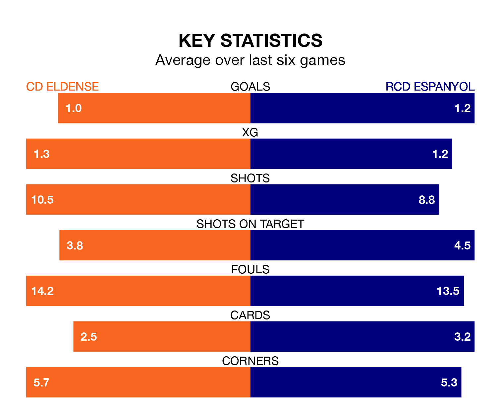

CD Eldense face RCD Espanyol at the Estadio Municipal Nuevo Pepico Amat on Sunday lunchtime looking to secure a first win in eight Segunda División games.
Eldense have lost two and drawn five matches since they last earned three points – against FC Andorra on November 12.
They face an Espanyol side who have won two and drawn four over that time.
With 34 goals in 22 games so far this season, Espanyol are the league's joint-third-highest scorers with 1.5 goals per game. And they are conceding fewer than average, letting in 24 goals at a rate of 1.1 per game.
Eldense are also above average scorers, with 1.3 goals per game, compared to a league average of 1.2. They have conceded 1.5 goals per game.
In Javi Puado, the away team have the league's sharpest shooter so far this season. He has notched 10 goals in 18 appearances.
His goal rate of one every 151 minutes is quicker than that of Mario Soberón Gutiérrez, the hosts' top scorer with a goal every 202 minutes, and a total of seven goals in 20 games.
Espanyol are fourth in the table after 22 games, of which they have won nine and drawn eight, earning 35 points.
Eldense are 11 places behind Espanyol in 15th, with six wins and nine draws putting them on 27 points.
Eldense's last match was on January 15, a 1-1 draw against Real Zaragoza, with Soberón Gutiérrez getting the goal for Eldense.
Espanyol drew 0-0 with Racing Club de Ferrol last time out, on January 13.
Updated: 06:13 (UTC), 18/01/24